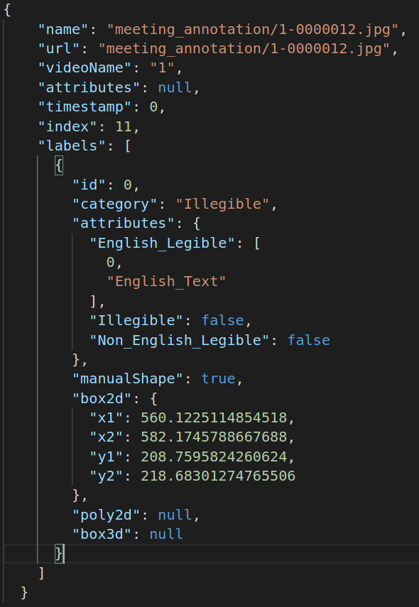

Perceiving text is crucial to understand semantics of outdoor scenes and hence is a critical requirement to build intelligent systems for driver assistance and self-driving. Most of the existing datasets for text detection and recognition comprise still images and are mostly compiled keeping text in mind. This paper introduces a new "RoadText-1K" dataset for text in driving videos. The dataset is 20 times larger than the existing largest dataset for text in videos. Our dataset comprises 1000 video clips of driving without any bias towards text and with annotations for text bounding boxes and transcriptions in every frame. State of the art methods for text detection, recognition and tracking are evaluated on the new dataset and the results signify the challenges in unconstrained driving videos compared to existing datasets. This suggests that RoadText-1K is suited for research and development of reading systems, robust enough to be incorporated into more complex downstream tasks like driver assistance and self-driving.
For more information please read RoadText-1K: Text Detection & Recognition Dataset for Driving Videos.
There are two types of annotation files, both in JSON format.
The first type contain JSON arrays representing metadata about the images. Each element of those arrays contains an attribute specifying the presence of a road sign, another one specifying if the sign contains text and xy-coordinates of the box, as follows:
The second type present JSON arrays that contain the ground-truth texts on the road signs inside the image. The elements' IDs match those in the previously presented annotation files. The text IDs match the bounging boxes IDs in the previously presented annotations.
The dataset can be downloaded here.
No model has been provided for this dataset.
No benchmarks have been provided for this dataset.
No associated challenges have been found for this dataset.
Dataset licenced under the Non-Commercial licence.